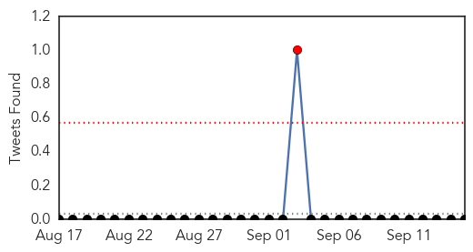
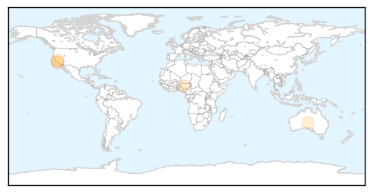
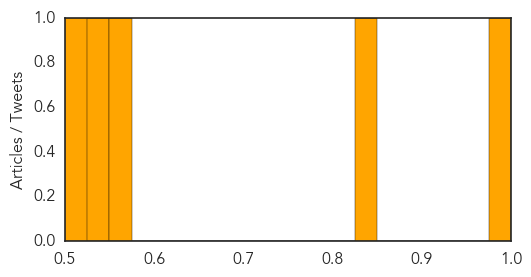

Hepatitis
30-Day Web Trend
0 alerts, 0 warnings
30-Day Twitter Trend
1 alerts, 0 warnings

Article Locations
Article Confidences
Top Articles:
Top Tweets:
-
No tweets found for Sep 15, 2015
Ebola
30-Day Web Trend
0 alerts, 0 warnings
30-Day Twitter Trend
0 alerts, 0 warnings

Article Locations
Article Confidences
Top Articles:
- 1.000
- New Ebola death in SLeone dims optimism for epidemic's end
- 1.000
- New Ebola death in S.Leone dims optimism for epidemic’s end
- 1.000
- 2 American Ebola patients flown from Liberia heading to U.S.
- 0.999
- Ebola returns to north Sierra Leone district, hundreds quarantined
- 0.999
- New Ebola death reported in northern Sierra Leone
- 0.999
- Sierra Leone Quarantines Nearly 700 People After New Ebola Death
- 0.998
- New Ebola death forces Sierra Leone to quarantine 700
- 0.998
- Hundreds quarantined following new Ebola fatality in Sierra Leone
- 0.998
- Hundreds quarantined as Ebola returns to north Sierra Leone district
- 0.997
- Ebola: 690 Quarantined In North Sierra Leone After 16 Year Old Died Of Ebola Last Sunday
- 0.997
- Ebola: 690 Quarantined In North Sierra Leone As Virus Resurfaces
- 0.996
- 16-Year-Old Girl Dies From Ebola In Sierra Leone
- 0.996
- He Wenping：Cooperation after Ebola--察哈尔学会的博客--凤凰网博客
- 0.995
- Sierra Leone quarantines 700 after new Ebola death
- 0.995
- Sierra Leone quarantines 700 after new Ebola death
- 0.993
- Sierra Leone quarantines 700 after new Ebola death
- 0.992
- First lecture of series focuses on impacts of Ebola
- 0.992
- Sierra Leone quarantines 700 after new Ebola death
- 0.992
- Sierra Leone quarantines 700 after new Ebola death
- 0.992
- Sierra Leone quarantines 700 after new Ebola death
- 0.990
- 700 quarantined after Ebola death in Sierra Leone
- 0.987
- Two Doctors Find Possible Cure for Ebola, Costing Under $10 – Press Release Rocket
- 0.983
- 690 Persons Quarantined, 1 Dead As Ebola Resurfaces In Sierra Leone
- 0.976
- The Ebola Crisis Isn’t Over
- 0.974
- Funding awarded to accelerate Ebola vaccine programme
- 0.960
- Life After Ebola in Sierra Leone
- 0.939
- Q&A with Liberia Ebola aid worker John Strader
- 0.931
- Medicine 101 with Radela Yvonne R. Cortes
- 0.927
- Johnson & Johnson Announces BARDA Funding Award to Accelerate Ebola Vaccine Program
- 0.914
- C. H. Rennie Hospital Joins PREVAIL Ebola Natural History Study
- 0.815
- Ebola threat worries Christian mission groups
- 0.795
- Daily Podcast – September 15, 2015
- 0.792
- Royal Navy personnel awarded for help in tackling Ebola in Salone « Awoko Newspaper
- 0.777
- WHO Director-General addresses Regional Committee for Europe
- 0.758
- Research for African diseases
- 0.599
- WHO Announces Campaign to Honor Global Health Workers
- 0.594
- IMF commits to post-Ebola recovery here
- 0.586
- Day 2 highlights: focus continues on intersectoral action
- 0.570
- WHO Urges European Action on Migrant and Refugee Health
- 0.526
- News Scan for Sep 15, 2015
Top Tweets:
- 0.965
- Life After Ebola in Sierra Leone - Huffington Post http://t.co/XBPOBwTVT1 ebola EVD
- 0.899
- Morning Break: Dr. Oz Chastened, Sanitizer High, Ebola Is Back - MedPage Today http://t.co/JtFzso5Ac3 ebola EVD
- 0.896
- Q&A with Liberia Ebola aid worker John Strader - The Daily Tar Heel http://t.co/oPohyoCcO8 ebola EVD
- 0.879
- Ebola Resulted in Thousands of Unregistered Births in Liberia - Voice of America http://t.co/uqNquy09uf ebola EVD
- 0.855
- Can Ozone Therapy Treat Ebola? - Popular Science http://t.co/52i7MV14Ej ebola EVD
- 0.852
- CH Rennie Hospital Joins PREVAIL Ebola Natural History Study - Liberian Daily Observer http://t.co/5dpJ21iyYU ebola EVD
- 0.806
- Foreign Ministry commends Ghana's fight against Ebola - GhanaWeb http://t.co/xkDkCLZSsB ebola EVD
- 0.798
- Ebola virus mutations may help it evade drug treatment geneticmutation http://t.co/z5D3INWtLa via
- 0.778
- Experimental Ebola vaccine regimen takes new steps under HHS program - Pharmacy Today, American Ph... http://t.co/oGYmsKN6Ri ebola EVD
- 0.756
- Liberia's Port Shows Surge in Trade as Nation Recovers from Ebola - Wall Street Journal http://t.co/R6lfjrDAXy ebola EVD
- 0.745
- Life After Ebola in Sierra Leone http://t.co/uMYBHpP5p4
- 0.731
- Global Help for Post-Ebola Recovery in West Africa http://t.co/H7xyMoOtAL
- 0.626
- .@IMFNews confirms their commitment in supporting Liberia's economy as it recovers from the Ebola epidemic http://t.co/YFSgrkZZvd
- 0.612
- 15 Sept - news pouch on avianflu avianinfluenza Ebola EbolaResponse MERS is here: http://t.co/698ZOVRD1T
- 0.570
- Bavarian Nordic inks new Ebola contract - The Copenhagen Post - Danish news in english http://t.co/autXO94tRK ebola EVD
- 0.555
- RT: Guinea heads towards 2 weeks with no news Ebola cases reported. http://t.co/YBwx5h2ewN